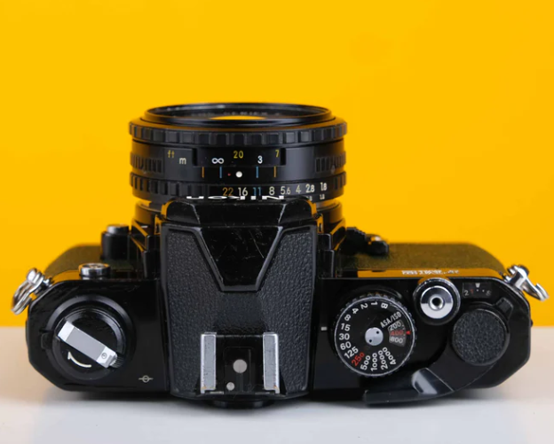
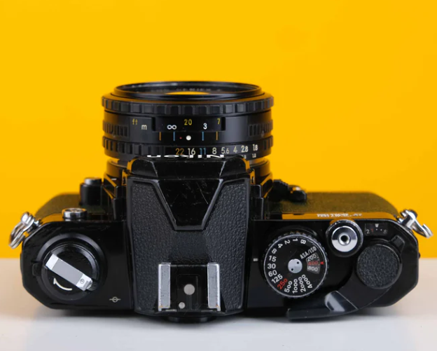

Nikon FM2 35mm SLR Film Camera
 

The Nikon FM2 is a classic 35mm single-lens reflex (SLR) film camera, known for its robust, mechanical design and exceptional durability. Introduced in 1982, it became popular among professional photographers and enthusiasts for its fully manual operation and high precision.
The Nikon FM2 has a classic, timeless design, with a clean, functional layout. It often features a black or chrome finish, with the black model being particularly sought after. The camera's body is compact, with a pleasing weight that balances well with a variety of lenses.
The FM2 is revered for its reliability, even in extreme conditions Its mechanical nature means it can operate without batteries (except for the light meter), making it a dependable choice for outdoor and travel photography.
You'll need to require 35mm film and A76 batteries
Price
$650 USD
All taxes are included.
Section 5